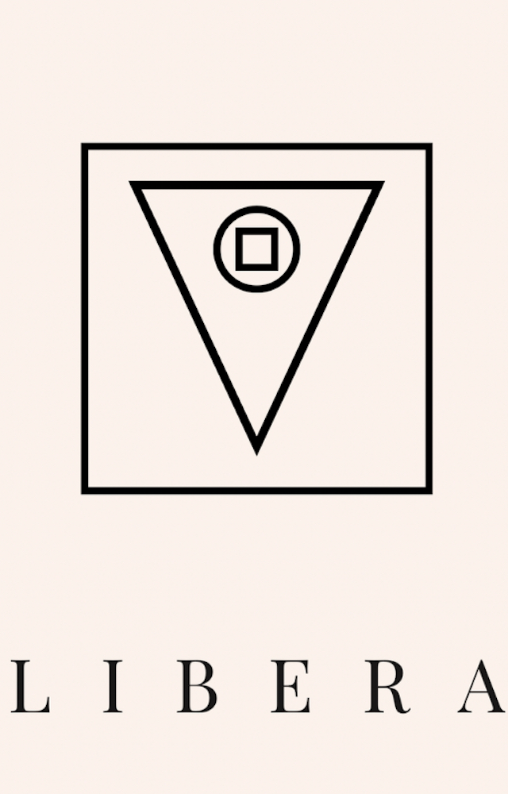

Libera tu mente en el papel: Escritura terapéutica práctica
Una guía de escritura terapéutica práctica para liberar tu mente de pensamientos que se repiten, se acumulan y te bloquean.

Cuando pensar más dejó de servir
Este método nació cuando pensar más dejó de servir y hablar no era una opción.
La única salida fue escribir, no para entender, sino para dejar de sostener.
Libera tu mente en el papel propone un método práctico para utilizar la escritura como una forma de sacar, observar y transformar aquello que ocupa espacio en tu mente.
El método de escritura terapéutica
El proceso se divide en tres etapas claras y ejecutables.
1. El Desvelo
Apuntas cada pensamiento tal como aparece, junto con lo que ocurre dentro de ti y a tu alrededor.
Sin filtros. Sin justificarte. Sin intentar ordenarlo.
Solo sacarlo.
2. La Clarificación
Detectas la raíz que conecta varios pensamientos.
No la versión cómoda.
La verdad que sostiene el ruido mental.
3. La Metamorfosis
Escribes la situación como un breve relato: primero el desenlace, luego el nudo, y al final la introducción.
Este orden no es casual: te obliga a mirar lo que sueles evitar.
Una forma avanzada de utilizar la escritura
El libro muestra cómo profundizar cada etapa hasta llegar a una forma avanzada del método.
En ella utilizas metáforas y alegorías como espejo de la realidad, creando distancia emocional sin exponerte directamente.
Ejemplo del método en acción
Un ejemplo breve permite ver cómo se relacionan las tres etapas:
El desenlace estaba claro: seguir igual significaba repetir el mismo diálogo interno cada noche.
El nudo apareció al escribirlo: el cansancio no venía del trabajo, sino de pensamientos no dichos, decisiones aplazadas y silencios acumulados.
La introducción fue simple: todo empezó cuando pensar más dejó de servir.
Qué encontrarás en el libro
- Un método estructurado de escritura terapéutica.
- Tres etapas diferenciadas: El Desvelo, La Clarificación y La Metamorfosis.
- Ejercicios y formas de profundizar el proceso.
- Una forma de trabajar pensamientos repetitivos y acumulados mediante la escritura.
- El uso de metáforas y alegorías para crear distancia respecto a aquello que quieres escribir.
Libera tu mente en el papel
Descubre el método completo de escritura terapéutica práctica.
Ver el libro en Amazon